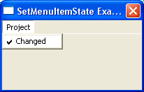

SetMenuItemState()
Syntax
SetMenuItemState(#Menu, MenuItem, State)Description
Changes the specified MenuItem state. This functions allows you to display a 'check mark' next to the menu item text.
Parameters
#Menu The menu to use. MenuItem The menu item to set the state for. State The state to set. The check is not displayed when State equals 0, if State equals something else then the 'check mark' will be displayed.
Return value
None.
Remarks
GetMenuItemState() can be used to retrieve the current menu item state.
Example
If OpenWindow(0, 200, 200, 200, 100, "SetMenuItemState Example") If CreateMenu(0, WindowID(0)) MenuTitle("Project") MenuItem(1, "Changed") SetMenuItemState(0, 1, 1) ; set check mark for the previously created menu item EndIf Repeat : Until WaitWindowEvent() = #PB_Event_CloseWindow EndIf
See Also
GetMenuItemState()
Supported OS
All